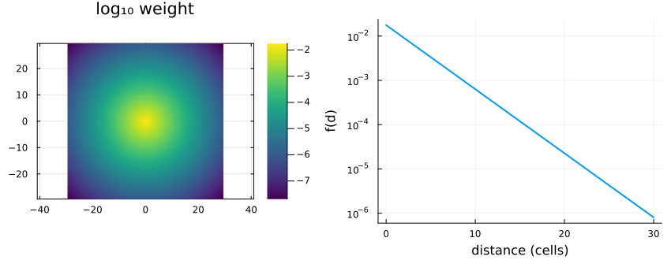
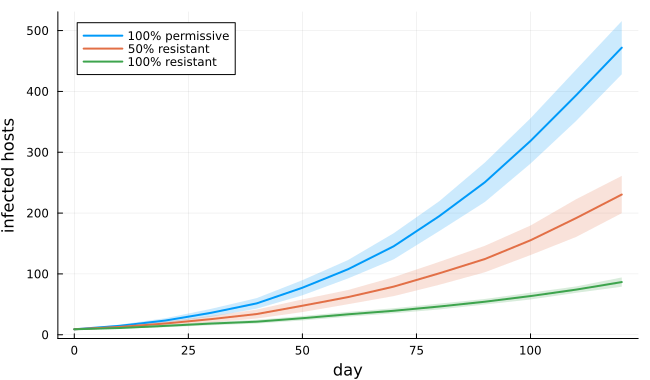
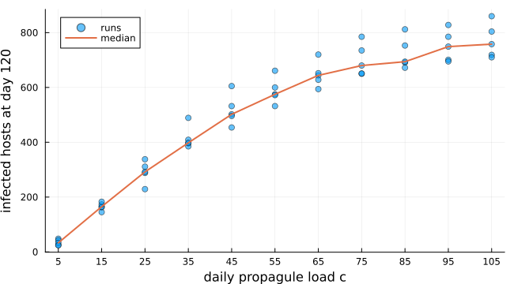
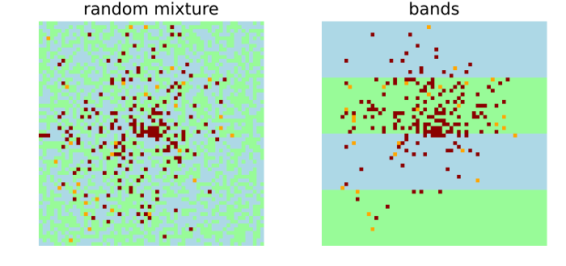
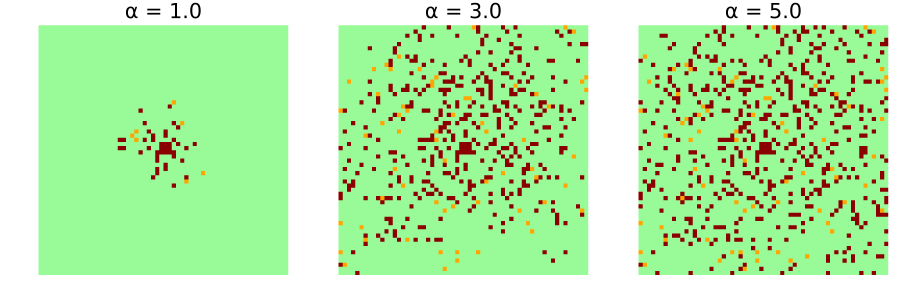
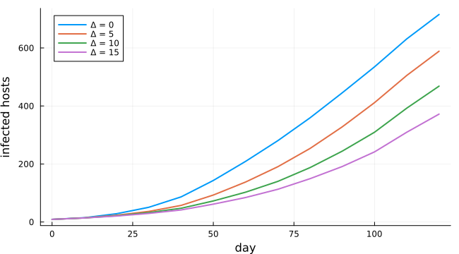
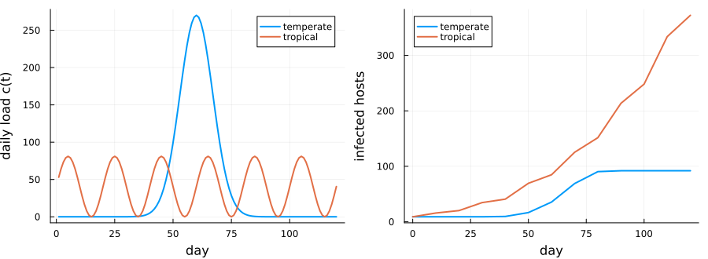

Fungus dispersal among resistant and permissive hosts
Simon Frost
- Overview
- The model
- Permissive, mixed and resistant fields
- Daily load of propagules
- Arrangement of resistant hosts
- Propagule range
- Latent period
- Seasons
- Deviations from the source
Overview
Planting resistant hosts among susceptible ones is one way to slow a fungal disease. Ferreira et al. (2013) built a cellular automaton to ask how much it helps, and whether the arrangement of the resistant hosts matters. They also asked how the outcome depends on how far propagules travel, the latent period, the daily load of propagules and the season. Their pathogen is hypothetical, and the model was not validated against data, so the results are scenarios, not forecasts. This model is a reproduction.
ENV["GKSwstype"] = "100"
using EcologicalCellularAutomata
using CellularAutomataCore
using Plots
using StatisticsThe model
A 60 × 60 field of hosts is updated once a day. A healthy host becomes latent with probability
F (1 − ∏ᵢ (1 − f(dᵢ))^c),
where the product runs over every infectious host i in the field, at distance dᵢ. c is the daily load of propagules from each infectious host. f(d) = exp(−d/α) / (2πα²) is the chance that one propagule lands on a host at distance d, so propagules travel α cells on average. F is the host’s permissiveness: 0.003 for a permissive host and 0.001 for a resistant one, so resistant hosts are not immune. A latent host becomes infectious after Δ = 10 days and stays infectious.
The product over every infectious host is a sum of logarithms, which is the core’s kernel field: a convolution of the infectious hosts with weights −log(1 − f(d)). The kernel reaches across the whole field, as dispersal in the source has no cutoff:
w, total = fungus_kernel(3.0; radius=59)
plot(heatmap(-29:29, -29:29, log10.(w[31:89, 31:89]); aspect_ratio=:equal, c=:viridis,
title="log₁₀ weight", framestyle=:box),
plot(0:30, [exp(-d / 3) / (2π * 9) for d in 0:30]; yscale=:log10, lw=2, legend=false,
xlabel="distance (cells)", ylabel="f(d)");
layout=(1, 2), size=(850, 330), bottom_margin=4Plots.mm)
Permissive, mixed and resistant fields
The source’s Figure 3 follows the number of infected hosts, latent or infectious, over 120 days in 10 runs each of three fields: all permissive, half resistant, and all resistant. Each starts with nine infectious hosts in the middle:
curves(layout; runs=10) = [[fungus_infected(u)
for u in solve(problem(:fungus_dispersal; layout, seed=s);
saveat=10).u] for s in 1:runs]
layouts = (:permissive, :random, :resistant)
results = Dict(l => curves(l) for l in layouts)
fig = plot(; xlabel="day", ylabel="infected hosts", legend=:topleft, size=(650, 380))
for (l, label) in zip(layouts, ("100% permissive", "50% resistant", "100% resistant"))
plot!(fig, 0:10:120, mean(results[l]); label, lw=2,
ribbon=std(results[l]), fillalpha=0.2)
end
fig
[(field=l, day_120=round(mean(last.(results[l])); digits=1),
sd=round(std(last.(results[l])); digits=1)) for l in layouts]3-element Vector{@NamedTuple{field::Symbol, day_120::Float64, sd::Float64}}:
(field = :permissive, day_120 = 471.9, sd = 43.7)
(field = :random, day_120 = 230.5, sd = 30.7)
(field = :resistant, day_120 = 86.6, sd = 7.6)The source reads about 500, 290 and 100 infected hosts at day 120. The permissive field agrees to within the spread of the runs. The resistant field is about an eighth lower and the mixed field about a fifth lower. The source does not say how it laid out its mixed field. Here each host is resistant independently with probability one half. The source does not state its latency convention either. Dispersing one day sooner (a latency of 9 here) raises the permissive field to about 494, but leaves the mixed field at about 244 and the resistant field at about 88, so those gaps remain unexplained.
Daily load of propagules
The source’s Figure 1 varies the daily load c from 5 to 105 propagules per infectious host:
loads = 5:10:105
final(load; runs=5) = [fungus_infected(solve(problem(:fungus_dispersal; seed=s,
pmap=(; load=Float64(load)));
save_everystep=false).u[end]) for s in 1:runs]
by_load = [final(c) for c in loads]
scatter(repeat(collect(loads); inner=5), reduce(vcat, by_load); label="runs", alpha=0.6,
xlabel="daily propagule load c", ylabel="infected hosts at day 120",
xticks=loads, legend=:topleft, size=(650, 360))
plot!(loads, median.(by_load); label="median", lw=2)
The source’s medians read about 50, 345, 560, 680 and 780 at loads 5, 25, 45, 65 and 105:
[(load=c, median=median(by_load[k])) for (k, c) in enumerate(loads) if c in (5, 25, 45, 65, 105)]5-element Vector{@NamedTuple{load::Int64, median::Float64}}:
(load = 5, median = 33.0)
(load = 25, median = 292.0)
(load = 45, median = 502.0)
(load = 65, median = 644.0)
(load = 105, median = 758.0)The response is non-linear and saturating, as in the source. It lies below the source’s medians by about a third at the smallest load and by a few percent at the largest. The other latency convention does not change the smallest loads, so this gap also remains unexplained.
Arrangement of resistant hosts
The source compared a random mixture with alternating bands of permissive and resistant hosts 15 columns wide. It found no significant difference in the number infected (p \> 0.05):
bands = [fungus_infected(solve(problem(:fungus_dispersal; layout=:bands, seed=s);
save_everystep=false).u[end]) for s in 1:10]
mixture = last.(results[:random])
(random=(mean=mean(mixture), sd=round(std(mixture); digits=1)),
bands=(mean=mean(bands), sd=round(std(bands); digits=1)),
t=round((mean(bands) - mean(mixture)) /
sqrt(var(bands) / 10 + var(mixture) / 10); digits=2))(random = (mean = 230.5, sd = 30.7), bands = (mean = 255.6, sd = 39.2), t = 1.6)pick(layout; seed=1) = solve(problem(:fungus_dispersal; layout, seed);
save_everystep=false).u[end]
mapof(u, title) = heatmap(u.host' .+ 3 .* u.resistant'; aspect_ratio=:equal,
framestyle=:none, colorbar=false, title,
c=[:palegreen, :orange, :darkred, :lightblue, :orange, :darkred],
clims=(0, 5))
plot(mapof(pick(:random), "random mixture"), mapof(pick(:bands), "bands");
layout=(1, 2), size=(700, 330))
Permissive hosts are green and resistant hosts blue; latent and infectious hosts are orange and dark red. The maps are transposed, so the bands, which run along columns, are drawn across. A Welch statistic of this size, over ten runs each, is no evidence of a difference. That agrees with the source.
Propagule range
The kernel is fixed when the model is built, so the mean range α is a keyword of the problem. Short ranges give separate local clusters. Long ranges scatter infections that merge across the field:
plot([mapof(solve(problem(:fungus_dispersal; range=α, seed=2); save_everystep=false).u[end],
"α = $α") for α in (1.0, 3.0, 5.0)]...; layout=(1, 3), size=(900, 300))
Latent period
A longer latent period delays every generation of infection:
fig = plot(; xlabel="day", ylabel="infected hosts", legend=:topleft, size=(650, 360))
for Δ in (0, 5, 10, 15)
runs = [[fungus_infected(u)
for u in solve(problem(:fungus_dispersal; seed=s, pmap=(; latency=Δ));
saveat=10).u] for s in 1:5]
plot!(fig, 0:10:120, mean(runs); label="Δ = $Δ", lw=2)
end
fig
Seasons
The source contrasts two seasons with about the same total load over 120 days. A temperate season has a single peak, c(t) = 270 exp(−(t − 60)²/10²). A tropical one has regular pulses, c(t) = 270 × 0.15 (sin(2πt/20) + 1):
t = 1:120
loadplot = plot(t, [270 .* exp.(-(t .- 60) .^ 2 ./ 100) 270 * 0.15 .* (sin.(2π .* t ./ 20) .+ 1)];
label=["temperate" "tropical"], lw=2, xlabel="day", ylabel="daily load c(t)")
season(s) = [[fungus_infected(u)
for u in solve(problem(:fungus_dispersal; seasonality=s, seed=k);
saveat=10).u] for k in 1:5]
temperate, tropical = season(:temperate), season(:tropical)
growth = plot(0:10:120, [mean(temperate) mean(tropical)]; label=["temperate" "tropical"],
lw=2, xlabel="day", ylabel="infected hosts", legend=:topleft)
plot(loadplot, growth; layout=(1, 2), size=(900, 330), bottom_margin=4Plots.mm,
left_margin=3Plots.mm)
As in the source, the tropical season infects many more hosts than the temperate one. In the temperate season the nine initial hosts infect a cohort during the peak around day 60. That cohort becomes infectious ten days later, when the load has almost gone, so the epidemic stops at about 90 hosts. The tropical pulses keep returning, and each new cohort of infectious hosts meets one.
Deviations from the source
foreach(d -> println("- ", d), model_info(:fungus_dispersal).deviations)- The boundary is not stated in the source; the field is finite with nothing beyond its edges (no wrap-around), so propagules leaving it are lost.
- The latency convention is not stated; a host infected in the step from day t first disperses in the step from day t + latency. A latency of 0 is treated as 1, since a synchronous step cannot infect and disperse at once.
- The nine initial infectious hosts form a 3 x 3 block at the centre; the source says only 'at its centre'.
- The seasonal load is real-valued (not rounded) and evaluated at day t + 1 for the step from time t.
- The source does not say how the 50% mixed field of its Figure 3 was laid out; the random layout draws each host independently.
- Bands are vertical and start with a permissive band at the first column; the source gives the width (15) but not the orientation.Ferreira, Iuri Emmanuel de Paula, Rafael de Andrade Moral, Cláudia Pio Ferreira, and Wesley Augusto Conde Godoy. 2013. “Modelling Fungus Dispersal Scenarios Using Cellular Automata.” Ecological Informatics 14: 53–58. https://doi.org/10.1016/j.ecoinf.2012.11.005.